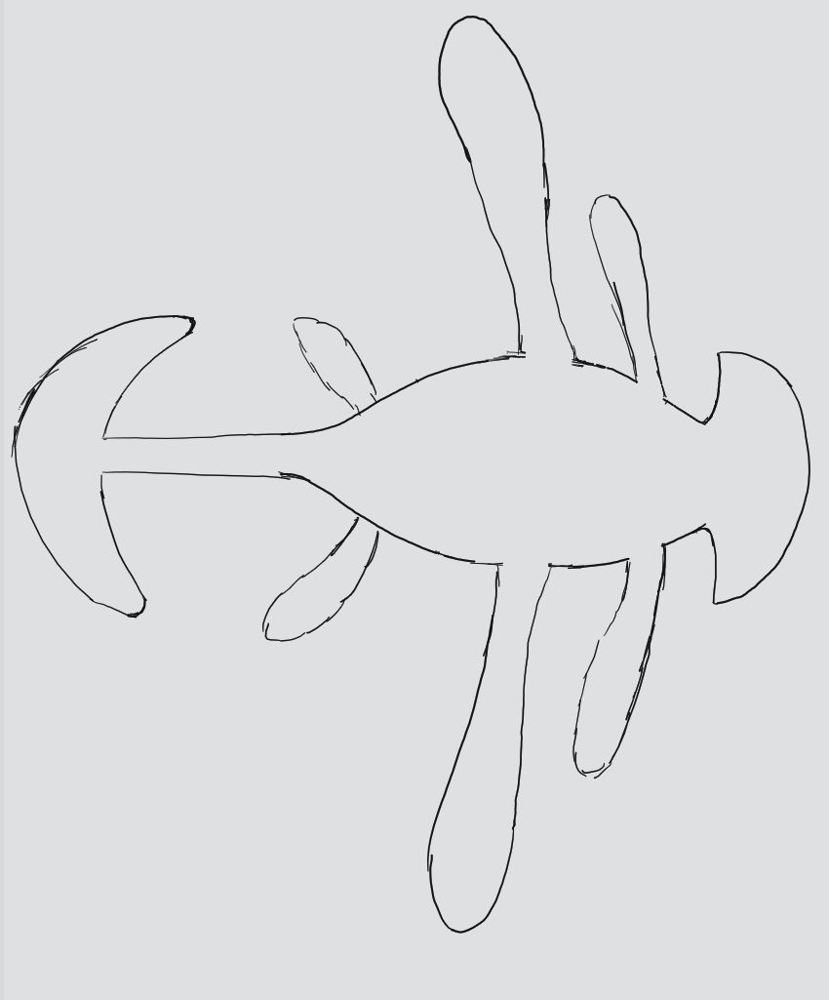

Yok
Das Yok ist eine einzigartige, wahlähnliche enorme Wasserkreatur, auf deren Rücken sich die Stadt Yok-ma befindet. 
Aussehen
Das Yok hat einen sehr großen ovalen Rumpf, an deren Seite sich jeweils drei flache, unterschiedlich große Flossen befinden. Die mittlere Flosse ist dabei um einiges größer als die anderen beiden und enthält das zur Orientierung eingesetzte Sonarorgan. Der langgezogene, mit stacheligen Hörnern bestückte Schwanz endet in einer sichelförmigen Fluke, die es dem Yok erlaubt auf der Stelle zu stehen. Die zum Körper zeigende Sichel verkleinert den Wenderadius merklich und dient bei Bedarf auch der Verteidigung. Der kurze Hals verbindet den massiven Körper mit einer breiten, flachen Schnauze, deren Oberkiefer mit großen Barten bestückt ist.
Ernähurng
Im Maul des Yok befinden sich große Barten, mit denen es Krill und kleine Fische aus dem Wasser filtert. Es ist auch in der Lage, sein Maul mit den am Oberkiefer befestigten Barten ganz zu öffnen und so auch etwas größere Fische und Meerestiere zu verschlingen.